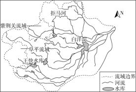

None - Fade - Slide - Convex - Concave - Zoom
选择班级
幻灯片样式
Black (default) -
White -
League -
Sky -
Beige -
Simple
Serif -
Blood -
Night -
Moon -
Solarized
下图示意我国著名的“乌金三角”，该地区分布着我国和世界上罕见的特大煤田，目前该区已成为我国优质动力煤生产和出口基地。据此完成1、2题。
1．下列属于“乌金三角”能源基地建设的优势条件的是( ) ①煤炭储量丰富 ②水资源充足 ③煤炭质量高、开采条件好 ④邻近广阔的能源消费市场 ⑤水陆交通便利
A．①③④
B．②③④
C．①④⑤
D．②④⑤
解析 第1题，由图可知，“乌金三角”能源基地位于我国黄土高原地区，处于陕西、山西和内蒙古的交界处。该地区煤炭储量丰富、质量高、开采条件好，邻近京津唐工业基地，有广阔的能源消费市场，但是该地区水资源不足，地形崎岖，沟壑纵横，水陆交通不便。
2．下列做法与“乌金三角”能源基地的可持续发展相违背的是( )
A．努力扩大煤炭的开采量和外运量，提高经济效益
B．调整产业结构，延长煤炭产业链，提高经济效益
C．发展技术，提高能源的利用率，减少浪费
D．积极进行生态环境整治，控制“三废”污染
第2题，“乌金三角”能源基地是依靠煤炭资源发展起来的，煤炭资源属于非可再生资源，应该调整产业结构，发展多种经营，延长煤炭产业链，提高经济效益，发展技术，提高能源的利用率，减少浪费，积极进行生态环境整治，控制“三废”污染；扩大煤炭的开采量和外运量，会加速资源枯竭，不利于该地区的可持续发展。
壶口瀑布是我国第二大瀑布，也是世界上最大的黄色瀑布。古贤水利枢纽坝址最终选择在碛口至禹门口河段(壶口瀑布上游约10千米处)，这里有黄河干流上最长的连续峡谷，地势弯曲、狭窄。而最初的方案是将古贤水利枢纽工程修建在壶口瀑布下游不远处。据此完成3～5题。
3．古贤水利枢纽工程的主要作用是( )
A．发电
B．航运
C．灌溉
D．旅游
解析 第3题，由材料可知，古贤水利枢纽工程所在地区有连续峡谷，地势弯曲、狭窄，可以推断古贤水利枢纽工程的主要作用不是灌溉和航运；其附近有壶口瀑布，不需要为了旅游功能而修建水利枢纽。
4．古贤水利枢纽大坝选址改变的主要原因是( )
A．移民数量大
B．淹没壶口瀑布
C．阻碍鱼类洄游
D．减轻水土流失
第4题， 该处河段为峡谷，当地居民较少，移民数量小；从“修建在壶口瀑布下游不远处”可以判断按照最初方案，水库蓄水后，水位升高，可能淹没壶口瀑布；壶口瀑布会阻碍鱼类洄游，虽然修建大坝也会阻碍鱼类洄游，但阻碍鱼类洄游不是修改坝址的主要原因；水库修建对整个流域的水土流失影响不大，故选B项。
5．古贤水利枢纽工程建成后对壶口瀑布的影响是( )
A．增加瀑布水量
B．增加瀑布落差
C．减轻瀑布黄色
D．减小瀑布宽度
第5题，古贤水利枢纽工程位于壶口瀑布上游，修建后会调节黄河径流量，但不会增加瀑布水量，A项错误；影响瀑布落差的主要因素是地形，与水利枢纽工程的建设无关，B项错误；大坝建成后，泥沙在库区淤积，使得水库下游黄河含沙量减少，减轻瀑布黄色，C项正确；大坝修建后会调节黄河径流量，有的季节瀑布宽度减小，有的季节瀑布宽度增加，D项错误。
抽水蓄能电站是利用电力负荷低谷时的电能抽水至上水库，在电力负荷高峰期再放水至下水库发电的水电站。下图为德国煤炭巨头鲁尔集团将某废弃煤矿地下采空区改造成抽水蓄能设施的示意图。读图，回答6、7题。
6．图示抽水蓄能电站建设的主要目的是( )
A．提高矿产开采效率
B．提高能源利用效率
C．恢复地表生态环境
D．促进矿产开发利用
解析 第6题，由材料可知，抽水蓄能电站利用电力负荷低谷时的电能抽水，在电力负荷高峰期再放水发电，目的是提高能源利用率。
7．我国西北矿区如果借鉴该模式，则需要调整的是( )
A．降低发电功率
B．封闭露天水库
C．废除太阳能和风力发电
D．缩小水库和蓄水池容量
第7题，我国西北地区属于温带大陆性气候，太阳能和风能资源丰富，应加大对太阳能和风力发电的开发力度，而当地能源需求量较小，为避免发生弃电现象，应扩大水库和蓄水池容量以保证足够蓄电容量，发电机的发电功率也应相应提高。西北地区夏季蒸发量大，降水少，且矿区粉尘多，为保护水资源，应封闭露天水库。
国家发改委发布的《可再生能源发展“十三五”规划》中明确指出，到2020年争取使非化石能源占一次能源消费比重达到15%。为此我国将大力开发清洁能源。河西走廊近年来风能、太阳能等新能源开发力度日益加大。读图，回答8、9题。
8．玉门地区被称为“世界风口”。从该地卫星图可推知，玉门地区成为“世界风口”的重要原因是( )
A．位于冬季风源地，风力强劲
B．处于干旱地区，多大风天气
C．地形狭长，形成峡谷效应
D．沙漠广布，风受到的阻力小
解析 第8题，结合玉门地区卫星图可知，玉门市两侧地势高，中间地势低，地处狭长的谷地；玉门市距冬季风的源地较近，为冬季风通道，峡谷效应使该地的风速增大，风力强劲，成为“世界风口”。故选C项。
9．玉门是我国最老的石油产区，已成为资源枯竭型城市，新能源产业已经成为玉门市转型的支柱产业。当前新能源开发利用面临的主要问题是( )
A．利用技术不成熟
B．产业转型起步晚
C．生态环境限制大
D．远离市场输电难
第9题，玉门地处我国西北内陆地区，经济发展水平较低，当地对能源的需求量较小；而我国东部地区经济发达，对能源的需求量大，但距玉门较远，输电成本高。故选D项。
托坎廷斯河发源于戈亚斯州阿纳波利斯附近，自源头由南向北流，在贝伦附近注入大西洋马拉若湾。下图为托坎廷斯河流域图及贝伦与巴西利亚两地气候资料图。据此完成10、11题。
10．该流域( )
A．以高原山地为主，地势自东北向西南倾斜
B．人口主要分布在北部地区
C．河流径流量大，雨季时易发生洪涝灾害
D．商品谷物农业发达
解析 第10题，图中河流自南向北注入大西洋，流域内地势南高北低，A项错误。北部地处赤道附近地区，为热带雨林气候，人口稀少，B项错误。河流在南部高原流经热带草原气候区，在北部平原流经热带雨林气候区，河流径流量大，雨季易发生洪涝灾害，C项正确。流域内热带种植园农业发达，D项错误。
11．在河流上游修建水库进行水电开发，对该流域的影响主要有( ) ①改变能源消费结构 ②提高防洪和抗旱能力 ③增加入海水量 ④加速河口淤积
A．①②
B．③④
C．①③
D．②④
第11题，在河流上游修建水库，仅能改变入海径流的季节分配，提高下游地区防洪抗旱能力，但不会增减入海径流量；因上游泥沙在水库内淤积，下游河口泥沙淤积减少；利用水力发电可增加清洁能源的比重，改变能源消费结构。
我国《能源发展“十二五”规划》中明确提出要加快建设五大国家综合能源基地并加强生态环境保护。下图为我国综合能源基地分布示意图。读图，回答12、13题。
12．有关五大能源基地的说法，正确的是( )
A．山西基地煤炭丰富，煤电、煤化工等综合开发前景广阔
B．新疆基地油气资源丰富，应以能源加工和出口为发展方向
C．西南基地交通运输不便，以新能源发电、输电建设为重点
D．蒙东基地距离我国能源消费市场较远，生产技术水平低
解析 第12题，山西煤炭资源丰富，大量外运煤炭对铁路造成的压力较大，故未来应以煤电、煤化工等综合开发为主；新疆是我国西气东输主要的气源地之一，以供给国内市场为主；西南地区水能资源丰富，应以水电开发为主；蒙东基地靠近我国东部能源消费市场。
13．各能源基地存在的环境问题及调整方向是( )
A．鄂尔多斯荒漠化严重，应全面转向发展第三产业
B．新疆水资源短缺，应兴建坎儿井保证矿区用水
C．西南地区土壤侵蚀加剧，应保护并恢复森林植被
D．内蒙古草场退化面积增大，应停止畜牧业发展
第13题，鄂尔多斯气候干旱，土地荒漠化严重，应加强对荒漠化的治理；新疆地区水资源短缺，应加强实施节水措施，优先保证生活用水；西南地区水土流失较严重，应加强植被保护；内蒙古草场退化面积增大，应合理控制载畜量，但停止畜牧业发展是不可取的。
大清河水系位于海河流域的中部，西起太行山区，东至渤海湾，北界永定河，南临子牙河，流域面积45 131 km2(其中山区占43%，平原占57%)。大清河流域是首都北京的南大门，生态建设意义重大。读大清河流域图，完成14、15题。
14．大清河中上游地区众多水库建设对白洋淀的影响有( )
A．减缓白洋淀泥沙淤积速度
B．延长白洋淀湖水的结冰期
C．加大白洋淀的防汛压力
D．降低白洋淀枯水期水位
解析 第14题，在大清河中上游地区建众多水库，可以减小水库下游河段的含沙量，从而减缓白洋淀泥沙淤积速度。
15．下列河流流域开发经验不适合大清河流域借鉴的是( )
A．综合开发利用水资源
B．利用廉价水电，优先发展高耗能化学工业
C．因地制宜，发展农、林、牧、渔业
D．保护环境与开发旅游资源相结合，促进旅游业的发展
第15题，大清河流域位于我国北方，降水较少，因此河流水力资源并不丰富，不能利用其廉价的水电发展高耗能化学工业。
(2017·长沙模拟)有色金属矿物是岩浆在冷却过程中矿物富集形成的。智利铜矿资源丰富、品质优、埋藏浅、分布广泛。该国大量出口铜矿石，但开采铜矿需要用大量水来控制粉尘，开采铜矿给本国带来经济效益的同时，也造成很多问题。据此回答16～18题。
16．该国铜矿资源埋藏浅的主要原因是( )
A．地表流水侵蚀作用强
B．岩浆侵入接近地表
C．地势高，沉积土层薄
D．火山喷发作用强烈
解析 第16题，根据图示经纬度可知，该国位于板块交界处，铜矿资源丰富，且岩浆侵入接近地表，使得铜矿品质优、埋藏浅、分布广泛。故B项正确。
17．与乙区相比，甲区铜矿开采的主要制约因素是( )
A．地形
B．水资源
C．技术
D．交通
第17题，甲区域受副热带高压和信风交替控制，且受寒流影响，降水少，河流较少；乙区域受西风和副热带高压交替控制，降水较多，河流多。开采铜矿需大量水，因此与乙区域相比，甲区域铜矿开采的主要制约因素是水资源。B项正确。
18．出口铜矿石对该国社会经济发展的影响有( ) ①变资源优势为经济优势 ②附加值低，经济效益差 ③减少大气污染治理的费用 ④有利于产业结构的调整
A．①②③
B．①②④
C．②③④
D．①③④
第18题，铜矿石属于初级产品，附加值低，经济效益差；该国出口铜矿石，可将资源优势转化为经济优势；铜矿石冶炼易造成严重的大气污染，出口铜矿石可减少大气污染治理的费用；出口铜矿石会增加该国初级产品的比重，不利于产业结构的调整。故A项正确。
水库消落带是指水库周边被淹没的土地周期性地出露于水面的一段干湿交替的特殊区域。消落带水土流失十分严重，成为库区淤积泥沙的主要来源之一。以防洪为首要目的的三峡水库，其最高水位和最低水位相差近30米，消落带面积约400平方千米(如下图)。据此回答19～21题。
19．下列关于水库消落带的成因，叙述正确的是( )
A．周期性蓄洪或泄洪
B．流域内植被破坏
C．气候变暖，库区蒸发加剧
D．周边地区过度开垦，农业大量引水灌溉
解析 第19题，水库消落带是指水库周边被淹没的土地周期性地出露于水面的一段干湿交替的特殊区域。水库蓄水、排水导致的水位涨落是形成消落带的原因。A项正确。
20．三峡水库消落带出露面积最大的季节可能是( )
A．春季
B．夏季
C．秋季
D．冬季
第20题，夏季是长江的汛期，下游受洪灾威胁最严重，三峡水库需大量排水来降低水位，以腾出防洪库容，故三峡水库消落带出露面积最大的季节是夏季。B项正确。
21．下列三峡水库消落带水土流失的防治措施中，不合理的是( )
A．加强对消落带生态环境管理与规划
B．大力建设植被生态工程
C．鼓励库区两岸村民在出露期耕种
D．建立预防预警监测系统
第21题，对于三峡水库消落带的水土流失，可以从建立预防预警监测系统、加强对消落带生态环境管理与规划、大力建设植被生态工程等方面进行防治；消落带开垦为耕地，不利于水土流失的防治。
曾经80%的经济依靠汽车产业的汽车之城——美国底特律市正式宣告破产。几乎同时中国国务院发布首份资源型城市可持续发展规划。规划中指出“促进资源型城市可持续发展，对于维护国家能源资源安全、推动新型工业化和新型城镇化、促进社会和谐稳定和民族团结、建设资源节约和环境友好型社会具有重要意义。”下图是底特律市所在区域示意图。据此回答22、23题。
22．底特律汽车产业发展壮大的有利条件主要有( )①地处五大湖地区，靠近太平洋，水陆交通便利 ②附近煤铁资源丰富，钢铁工业发达 ③相关产业集聚，提升竞争力 ④劳动力廉价
A．①②
B．②③
C．①④
D．③④
解析 第22题，五大湖地区距离太平洋较远；五大湖附近煤铁资源丰富，钢铁工业发达，能为汽车制造提供大量钢材；汽车产业零部件众多，工业联系广泛，相关企业之间密切合作可提高竞争力；汽车产业发展壮大与劳动力价格关系不大。故选B项。
23．我国资源型城市容易面临与底特律相似困境的主要原因是( )
A．土地、劳动力价格上升
B．生态环境破坏
C．过度依赖单一产业发展
D．资源趋于枯竭
第23题，我国资源型城市容易面临与底特律相似的困境主要原因是过度依赖单一产业发展。故选C项。
在决定建设三峡工程之前，专家曾对阿斯旺工程的经验教训进行过研究：阿斯旺大坝在获得灌溉、防洪、航运、发电等多方面效益的同时，也产生了一系列环境问题，主要是河口渔获量减少、下游农田因失去淤泥肥源而变得贫瘠、土地盐碱化、海水侵蚀加重等。读阿斯旺工程与三峡工程对比图，回答24、25题。
24．下列关于两个工程利弊的叙述，正确的是( )
A．三峡工程的首要任务是为华北地区供水
B．三峡工程对环境的有利影响主要在中下游地区
C．阿斯旺工程的唯一任务是防洪
D．阿斯旺工程对生态环境的不利影响主要在库区
解析 第24题，任何工程对环境都会产生影响，三峡工程对环境产生的有利影响主要在长江中下游地区，它可以防止或减轻洪涝灾害对中下游地区生态环境的破坏。
25．就年泄洪量而言，三峡工程远高于阿斯旺工程的主要原因是
A．三峡工程位于地势阶梯交界处，河流落差大
B．长江流域主要处于热带季风气候区，降水量丰富
C．尼罗河流域多处于热带沙漠气候区，降水稀少
D．阿斯旺工程上游农业发达，取水量较大
第25题，就年泄洪量而言，三峡工程远高于阿斯旺工程的主要原因是长江流域主要位于亚热带季风气候区，降水量大，而阿斯旺工程所处的尼罗河流域多位于热带沙漠气候区，降水稀少。
26．下图为我国华北地区某乡驻地及周边部分辖区示意图，经勘探发现图示区域有储量丰富的大煤田，结合图示，完成下列各题。(12分)
(1)随着对煤炭资源的大规模开采利用，图示区域会发生的变化有( ) ①该乡驻地逐渐发展成为新型的工矿城市 ②经济结构会由以种植业和林果业为主发展为以工矿业为主 ③居民数量迅速增加，多从事工矿业和服务业 ④交通状况会有明显的改善，内外联系更加便捷 ⑤出现植被减少、水源被污染、空气质量下降的现象
A．①②⑤
B．①②③
C．①②③④
D．①②③④⑤
(2)图示区域除了通过铁路、公路等直接向外运输煤炭外，还将煤炭转化为电能输出，这样做有哪些好处？
(2)减轻交通运输压力；改善能源消费结构；延长产业链，提高附加值。
(3)如果把坑口电站建在①处，是否合理？请说明理由。
(3)合理。接近煤炭产地；靠近公路，交通便利；位于与当地盛行风向(东南风和西北风)垂直的郊外，减少环境污染。
(4)经过几十年的开采，图中区域煤炭资源几近枯竭。为促进区域经济的可持续发展，该区域将进行产业结构调整。请你就这一课题提出合理化建议。
优化能源基地工业结构，延长产业链；发展新兴工业和第三产业等。
解析 矿产开发和相关产业的发展，一方面会促进区域社会经济发展，推动城市化进程，但也会对环境造成很大的压力。随着资源枯竭等问题的出现，这种区域应及时调整产业结构，改善环境，才能实现可持续发展。坑口电站的选址应接近煤炭产地，同时为减轻对居民区的污染应考虑盛行风向问题。
阅读图文材料，完成下列各题。(13分) 据报道，智利将在阿塔卡马沙漠斥巨资修建水电站(如下图所示)。该工程计划利用太阳能将海水抽至山顶的两个水库中再让海水倾泻而下发电。水库一旦蓄满水，水量将相当于2.2万个奥运会标准泳池的总蓄水量，装机容量将达300兆瓦，可满足三省供电需求。
(1)简析该工程选址的合理性。
(1)位于沙漠中，气候干旱，太阳能资源丰富；山脉(水库)距太平洋近，输水距离近；地势落差大；山顶水库的容量大，蓄水量大；位于人烟稀少的地区，工程移民少。
解析 解答本题应该从地理环境的整体性入手。第(1)题，分析工程的区位条件。第一，沙漠地区云量少、降水少，太阳能资源丰富，有动力保障；第二，距离近，建设成本较低；第三，落差大，这是建设水电站的必要条件；第四，水库的容量大；第五，位于人烟稀少的地区，工程移民少。
(2)试分析该地将太阳能转换成水能发电的原因。
(2)太阳能受昼夜交替、太阳高度变化、天气等影响，发电量不稳定；该工程中的水库容量大，水力发电更稳定。
第(2)题，从太阳能和水能两种能源的特征分析。太阳能受昼夜变化、太阳高度变化、天气变化等影响，发电量不稳定。该工程和所在地区水量大、落差大，水力发电更稳定。
(3)简述工程建成后对水库周边环境带来的影响。
(3)调节气候，增加空气湿度和大气降水；影响生物多样性；地下水位上升，土壤盐碱化加剧；可能诱发地质灾害(地震等)。
第(3)题，对环境的影响应该从有利影响和不利影响两个方面来分析，有利影响类似于湿地的生态功能；不利影响主要从水库给沙漠地区造成次生盐渍化、可能诱发地震等方面来分析。
28．阅读图文材料，回答下列问题。(12分) 流域是一个相对独立的自然地理系统，它以水系为纽带，将系统内各自然地理要素连接成一个不可分割的整体。随着人类活动的加剧，流域已成为区域人地关系十分敏感而复杂的地理单元。图甲是某时期某流域局部地形图，图乙是10年后该地区土地利用状况图，图丙是该地区的月平均气温变化曲线和降水量柱状图
(1)说明A支流的水文特征。
(1)流量季节变化大；汛期在夏季；河流落差大，水流急；汛期河水含沙量较大；无结冰期。
解析 第(1)题，根据图丙可知，该地区为亚热带季风气候，无结冰期，降水丰富，但季节变化大，夏季降水较多，河流的汛期出现在夏季；由图甲中等高线分布可知A支流处在低山、丘陵地区，河流落差大，水流急；根据土地利用状况图可知，A支流两岸土地利用类型以耕地为主，且上游植被破坏严重，有岩石裸露，故河水在汛期的含沙量较大。
(2)说出B、C两支流在开发利用方向上的不同。
(2)B支流：开发水能；发展旅游业。C支流：发展航运。
第(2)题，根据图甲和图乙可知，B支流主要流经山区，落差大，水能丰富，且流域内有瀑布和果园，可开发水能和发展旅游业；而C支流主要流经平原地区，水流平稳，且沿岸多居民点，可以发展航运。
(3)指出图乙中土地利用不合理的现象，并说明这些现象对湖泊及其下游环境造成的影响。
(3)土地利用不合理现象：坡地开垦；围湖造田。 对湖泊及其下游环境的影响：湖泊淤积，湖泊面积缩小；生物多样性减少；湖泊调蓄功能减弱，加大下游洪灾威胁。
第(3)题，仔细对比甲、乙两图，可发现河流上游坡地开垦现象严重；湖泊面积在缩小，湖滨地带成为农田，这是由围湖造田造成的。毁林开荒、开垦陡坡会造成严重的水土流失，致使下游湖泊泥沙淤积严重，再加上围湖造田，使湖泊面积减小，造成生物多样性减少，也使其调节径流的功能减弱，加剧湖泊下游洪涝灾害。
(4)如果在该地区选址建水库，你认为除了上述方面的资料外，还需要收集哪些方面的必要资料。
(4)地质资料；河流水文资料；社会经济资料。
第(4)题，建水库除了要考虑当地的地形、气候条件外，还需考虑有无断层等地质条件、河流水文条件以及经济发展、移民等社会经济状况。
29．(2019·课标全国Ⅲ)阅读图文资料，完成下列要求。(13分) 德国鲁尔区曾是以煤炭、钢铁产业为主的传统工业区，经过综合整治，经济由衰落走向繁荣，环境污染严重的局面得到根本改善。目前，该区有500多万人口，50多座城市，老龄人口比重高居德国之首。该区医疗保健业发达，拥有100多家医院、近万名医生及数以千计的保健站、药店等。波鸿市人口近40万，是重要的生物制药基地，多所大学的医学研究处于世界领先水平。2009年，鲁尔区医疗保健中心落户波鸿市，并新建保健园。图1示意鲁尔区的城市建成区和波鸿市的位置，图2示意鲁尔大学、生物制药科学园和保健园在波鸿市的位置。
(1)概括鲁尔区城市的等级规模和空间分布特征。
(1)(数量多，规模小)以中小城市为主；城市密集(建成区连片，城市间距离近)。
解析 第(1)题，结合文字材料“该区有500多万人口，50多座城市”且“波鸿市人口近40万”说明该区城市数量多，规模小，以中小城市为主。结合图1可以看出该区的城市建成区连片且分布集中，由此可得出鲁尔区城市空间分布特征。
(2)分析鲁尔区医疗保健业发达的原因。
(2)鲁尔区(是德国也是世界重要的工业区，)经济发达，医学研究水平高；曾经环境污染严重，健康问题多，对医疗保健需求高；老龄人口比重大，对医疗保健需求大。
第(2)题，医疗保健业属于新兴的高新技术产业，结合材料从影响产业区位因素的角度分析即可，如“医学研究处于世界领先水平”说明医学研究水平高；曾经“环境污染严重”说明当地居民健康受威胁，因此保健业有巨大的市场需求；从“老龄人口比重高居德国之首”，可知老年人对医疗保健的需求大。
(3)说明在波鸿市建设鲁尔区医疗保健中心的优势条件。
(3)有多所大学(高等院校)，医学科研力量雄厚；有生物制药科学园，医药研制水平高；位置适中(有利于医疗保健和医学研究、医药生产间的联系和相互促进)。
第(3)题，医疗保健中心建设的优势条件可以从医学科研力量强；药物研制水平高；鲁尔大学和生物制药科学园位置邻近，便于联系和相互促进等角度分析。
(4)指出波鸿市保健园选址的合理性。
(4)保健园靠近生物制药科学园和鲁尔大学，可提供知识和技术支撑；位于城市边缘，环境较优，安静。
第(4)题，结合材料从医疗保健对知识、技术的要求和医疗保健园周边环境方面进行分析。